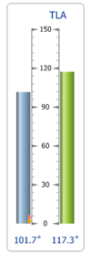
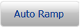
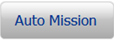
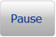

The display computer screens are described in the section below. The display computer screens are divided into the following areas:
The throttle display has the following screens:
The content of each section depends on the engine that is tested. The Engine Selection screen shown below is a typical example of a display computer screen.
The log summary panel displays all actions taken since the Throttle System started running. Use the log window up and down arrows to scroll through the entries.
The table below describes the status icons and buttons.
| Component Identification | Description | Status Message or Engineering Units |
|---|---|---|
| Alarms button |
Displays all alarms in the Log Summary Panel. Pressing the button filters the log window to only display alarms. Pressing the button again clears the filter. |
Red symbol: Alarms present. Grey symbol: No alarms present. |
| Warning button |
Displays all warnings in the Log Summary Panel. Pressing the button filters the log window to only display warnings. Pressing the button again clears the filter. |
Orange symbol: Warnings present. Grey symbol: No Warnings present. |
| Heart Beat icon |
Indicates that the display computer software is running. When the system is running correctly the word "UECU" continuously scrolls across the icon. | -- |
| Up Arrow |
Scrolls up through the log entries in the Log Summary Panel. | -- |
| Down Arrow |
Scrolls down through the log entries in the Log Summary Panel. | -- |
The config mode buttons allow the operator to navigate between the different screens.
The table below describes the config mode buttons.
| Component Identification | Description | Status Message or Engineering Units |
|---|---|---|
| Run button |
Displays the Run Mode screen. | Green button: Run Mode screen open and active. Grey button with blue label: Button is inactive. Grey button with grey label: Button is disabled. |
| Engine button |
Displays the Engine Select Mode screen. | Green button: Engine Select Mode screen open and active. Grey button with blue label: Button is inactive. Grey button with grey label: Button is disabled. |
| Rigging button |
Displays the Rigging Mode screen. | Green button: Rigging Mode screen open and active. Grey button with blue label: Button is inactive. Grey button with grey label: Button is disabled. |
| Calibration button |
Displays the Calibration Mode screen. | Green button: Calibration Mode screen open and active. Grey button with blue label: Button is inactive. Grey button with grey label: Button is disabled. |
| Config button |
Displays the Config Mode buttons when in Run Mode. | Green button: Config Mode screen open and active. Grey button with blue label: Button is inactive. |
Use the Engine Selection Mode screen to select the desired test engine. The Engine Selection screen (below) can be displayed by pressing the Config -> Engine button on the bottom of the screen.
| Component Identification | Description | Status Message or Engineering Units |
|---|---|---|
| Select Engine list box | Lists the test engines available to select. | -- |
| Information about selected engine table | Displays information about the selected engine such as:
|
-- |
| Download button |
Downloads the selected engine's configuration file to the throttle controller. | Grey button with blue label: Button is active. Grey button with grey label: Button is inactive. |
Use the Rigging Mode screens to rig the actuator(s) that have been defined for the selected engine.
There are the following Rigging Mode screens:
Use the Rigging Mode screen to select the actuator to be rigged and the type of rigging to be performed. The Rigging Mode screen (below) can be displayed by pressing the Config ->Rigging button on the bottom of the screen.
| Component Identification | Description | Status Message or Engineering Units |
|---|---|---|
| Select Actuator list box | Lists the actuators defined for the selected engine. | -- |
| Information about selected channel table | Displays information about the selected actuator such as:
|
degrees |
| Start Manual button |
Starts the manual rigging process for the selected actuator. | -- |
| Start Auto button |
Starts the auto rigging process for the selected actuator. | -- |
Use the Manual Rigging Mode screen to perform a manual rigging. The Manual Rigging screen (below) can be displayed by pressing the Start Manual button on the Rigging Mode screen.
| Component Identification | Description | Status Message or Engineering Units |
|---|---|---|
| Rigging Table | Displays the following rigging data:
|
Raw value: degrees Torque: oz-in |
| Accept Button |
Accepts the low or high value. | Grey button with blue label: Button is active. Grey button with grey label: Button is inactive. |
| Cancel Button |
Cancels the rigging. | -- |
| Save Button |
Saves the rigging. | Grey button with blue label: Button is active. Grey button with grey label: Button is inactive. |
Use the Auto Rigging Mode screen to perform and an automatic rigging. The Auto Rigging Mode screen (below) can be displayed by pressing the Start Auto button on the Rigging Mode screen.
| Component Identification | Description | Status Message or Engineering Units |
|---|---|---|
| Rigging Table | Displays the following rigging data:
|
Raw value: degrees Torque: oz-in |
| Cancel Button |
Cancels the rigging. | -- |
| Save Button |
Saves the rigging. | Grey button with blue label: Button is active. Grey button with grey label: Button is inactive. |
Use the Calibration Mode screens to calibrate a channel.
There are the following Calibration Mode screens:
Use the Calibration Mode screen to select and calibrate a channel. The Calibration Mode screen (below) can be displayed by pressing the Calibration button on the bottom of the screen.
| Component Identification | Description | Status Message or Engineering Units |
|---|---|---|
| Select Channel list box | Lists channels that can be calibrated. | -- |
| Information about selected channel window | Displays information about the selected actuator such as:
|
-- |
| Start button |
Starts the calibration procedure for a channel. | -- |
Use the Right Lever Calibration screen to calibrate the Lever channel. The Lever Calibration screen (below) can be displayed by selecting Right Lever in the Select Channel List box and pressing Start.
| Component Identification | Description | Status Message or Engineering Units |
|---|---|---|
| Lever Calibration Table | Displays the following rigging data:
|
Raw value: degrees Torque: degrees |
| Accept Button |
Accepts the value. | Grey button with blue label: Button is active. Grey button with grey label: Button is inactive. |
| Cancel Button |
Cancels the calibration. | -- |
| Save Button |
Saves the calibration. | Grey button with blue label: Button is active. Grey button with grey label: Button is inactive. |
Use the Actuator Calibration screen to calibrate the Actuator channel. The Actuator Calibration screen (below) can be displayed by selecting Right Actuator in the Select Channel List box and pressing Start.
| Component Identification | Description | Status Message or Engineering Units |
|---|---|---|
| Actuator Calibration Table | Displays the following calibration data:
|
degrees |
| Cancel Button |
Cancels the calibration. | -- |
| Save Button |
Saves the calibration. | -- |
Use the Rem Command and Feedback Calibration screen to calibrate the remote command and feedback channels. The Rem Command and Feedback # Calibration screen (below) can be displayed by selecting Rem Command or Feedback # in the Select Channel List box and pressing Start.
| Component Identification | Description | Status Message or Engineering Units |
|---|---|---|
| Feedback Calibration Table (The table can hold up to 8 points.) |
Displays the following calibration data:
|
degrees rp, lbf, etc. |
| Accept Button |
Accepts the value. | Grey button with blue label: Button is active. Grey button with grey label: Button is inactive. |
| Cancel Button |
Cancels the calibration. | -- |
| Save Button |
Saves the calibration. | -- |
Use the Run Mode screens to operate and monitor the test engine.
There are the following Run Mode screens:
Use the Run Mode screen to operate the Throttle System manually. The Run Mode screen (below) can be displayed by pressing the Run button on the bottom of the screen.
The Run Mode button is only enabled after an engine has been selected and any actuator(s) defined in the engine configuration file are rigged.
| Component Identification | Description | Status Message or Engineering Units |
|---|---|---|
Lever Gauge(s)  |
Displays the position of the lever(s) and actuator, resolver, or RVDT. The label on top of the lever gauge is the name of the lever.
The label at the top of lever gauge can be changed in the master configuration file in the <lever#><caption>TLA</caption> element. |
Green Bar: Indicates the position of the Throttle lever Blue Bar: Indicates the position of the actuator, resolver, or RVDT. |
Position indicators |
Indicates the engine Idle position and the Cut Off position. | Red indicator: engine Idle position Yellow indicator: engine Cut Off position |
| Fuel button |
Turns on/off the fuel supply to the Engine. The default state is off. The user can not exit Run Mode if the fuel state is on.
The label on the button can be changed in the master configuration file using the <fuelOnPosition buttonTitle="Fuel"> element. |
Green button: the fuel is on. Grey button: the fuel is off. |
| Flight Idle button |
Sets the engine state to Flight Idle. The Flight Idle state cannot be selected unless the fuel status is on. The label on the button can be changed in the master configuration file using the <flightIdlePosition buttonTitle="Flight Idle"> element. |
Blue button: Flight Idle is active. Grey button: Flight Idle is inactive. |
| Idle button |
Trips the engine state to Idle.
The label on the button can be changed in the master configuration file using the <tripIdlePosition buttonTitle="Idle"> element. |
Red button: Idle is active. Grey button: Idle is inactive. |
| Cut Off button |
Trips the engine state to Cut Off.
The label on the button can be changed in the master configuration file using the <tripCutOffPosition buttonTitle="Cut Off"> element. |
Orange button: Cut Off is active. Grey button: Cut Off is inactive. |
| Stop Editor button |
Displays the Stop Editor buttons. | -- |
| Stop Editor Buttons | ||
| Arrow button up direction |
Creates a Stop that limits the lever in the increasing direction. When the lever reaches an increasing stop, if the lever is moving in an increasing direction, the output to the engine stops at the stop position. If the lever is moving in the decreasing direction the output moves past the position without stopping. |
Blue button: Button is active. Grey button: Button is inactive. |
| Arrow button up direction |
Creates a Stop that limits the lever in both directions. When the lever reaches a both direction stop the output to the engine stops at the stop position regardless of the direction the lever is travelling. |
Blue button: Button is active. Grey button: Button is inactive. |
| Arrow button up direction |
Creates a Stop that limits the lever in the decreasing direction. When the lever reaches a decreasing stop, if the lever is is moving in a decreasing direction, the output to the engine stops at the stop position. If the lever is moving in the increasing direction the output moves past the position without stopping. |
Blue button: Button is active. Grey button: Button is inactive. |
| Add button |
Adds a Stop. The output command to the engine (either actuator, resolver, or RVDT) does not move past the stop position. The Stop is not a mechanical stop so the Throttle lever can move past this point but the Throttle does not send a command to increase/decrease fuel supply to the engine. The operator can override the Stop by pressing a button on the handle of the Throttle lever when the lever is within 2 percent of the Stop position. |
-- |
| Stop Location |
Indicates the location of a stop in degrees. | -- |
| Auto Throttle Buttons | ||
| Auto Ramp button  |
Displays the Auto Ramp screen. | Grey button with blue label: Button is active. Grey button with grey label: Button is inactive. |
| Auto Mission button  |
Displays the Auto Mission screen. | Grey button with blue label: Button is active. Grey button with grey label: Button is inactive. |
Use the Auto Ramp Mode screen to run the Throttle System in Auto Throttle Mode. Auto Ramp Mode is used to set a one time move. When the Start button is pressed, the target and time is sent to the controller and the move is executed. When the move is complete the system is put back into manual mode. The Auto Ramp Mode screen (below) can be displayed by pressing the Auto Ramp button on the bottom of the Run Mode screen.
| Component Identification | Description | Status Message or Engineering Units |
|---|---|---|
| Auto Ramp Set | ||
| Ramp field | Displays the Auto Throttle Mode output to be controlled. Clicking on the lever gauge selects that output to control. Only applicable in a dual lever system. | -- |
| Position field | Indicates the actuator position in degrees that is used in the Auto Ramp mission. | -- |
| Move time field | Indicates the duration of time that the engine runs for during the Auto Ramp mission. | -- |
| Start/Stop Button |
Starts or stops Auto Ramp. | -- |
| Auto Ramp Mission in Progress Window | ||
The Auto Ramp Mission in Progress window is the same window as the Auto Mission in Progress window. (For details see, Auto Mission in Progress Window). During auto Throttle movements the lever does not follow. |
||
Use the Auto Mission Mode screen to select preconfigured Auto Throttle Mode missions. A mission is a script with many auto Throttle commands. The Auto Mission Mode screen (below) can be displayed by pressing the Auto Mission button on the bottom of the Run Mode screen.
| Component Identification | Description | Status Message or Engineering Units |
|---|---|---|
| Auto Mission Selection | ||
| Select Mission list box | Lists the Auto Missions configured for the selected engine. | -- |
| Start button | Starts the Auto Mission. | -- |
| Auto Mission in Progress Window | ||
| Mode field | Displays the Auto Throttle Mode, see Running an Engine in Auto Throttle Mode. | -- |
| Position field | Indicates the commanded lever position in degrees. | degrees |
| Feedback field | Indicates the current lever position in degrees. | degrees |
| Move Time field | Indicates the total time that the Throttle System runs at the current speed. | -- |
| Elapsed Time field | Indicates the elapsed time that the Throttle System has been running at the current speed. | -- |
| Pause/Start button  |
Pauses and then restarts the Auto Mission after it has been paused. | -- |
| Cancel button |
Cancels the Auto Mission. | -- |